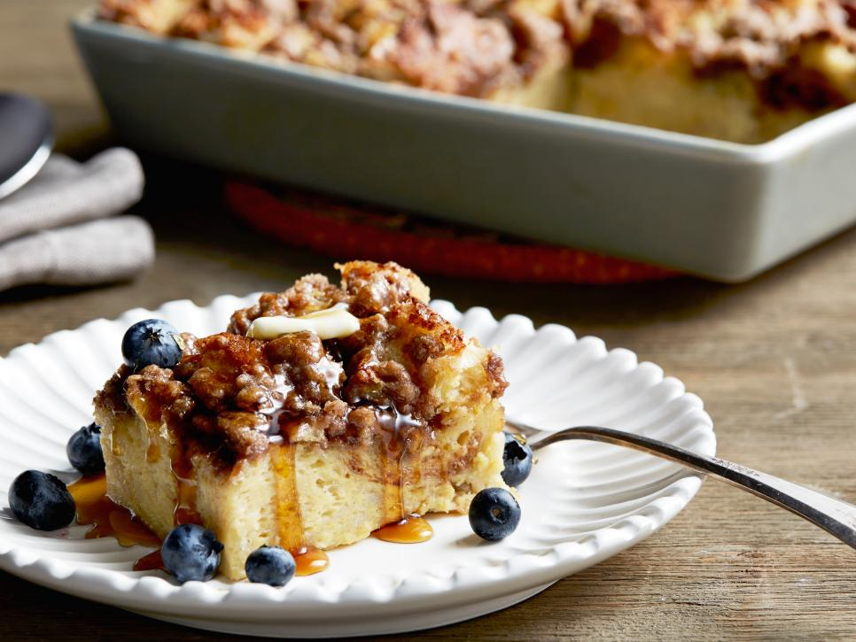

Cinnamon Baked French Toast

Ingridients
French Toast:
- Butter, for greasing
1 loaf crusty sourdough or French bread
- 8 whole eggs
- 2 cups whole milk
- 1/2 cup whipping (heavy) cream
- 1/2 cup granulated sugar
- 1/2 cup brown sugar
- 2 tablespoons vanilla extract
Topping:
1/2 cup all-purpose flour
1/2 cup firmly packed brown sugar
1 teaspoon ground cinnamon
1 stick cold butter, cut into pieces, plus more for serving
Warm pancake syrup, for serving
1 cup fresh blueberries, for serving